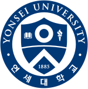
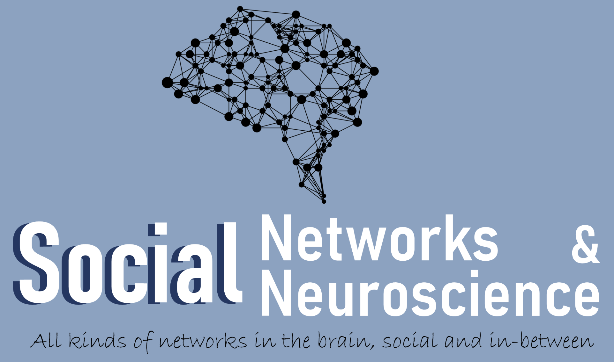
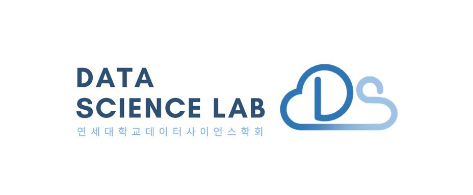

|
Chaemin Hwang I am an undergraduate student at Yonsei University, majoring in Sociology. My research interests lie in Computer Vision, with a particular focus on Generative Models. I am particularly interested in developing robust and efficient architectures that can enhance image synthesis quality. My goal is to bridge the gap between theoretical advancements in deep learning and their practical applications in real-world scenarios. |

|
Education |
|  |
Yonsei University, Seoul Korea
Mar 2021 - Present B.A. in SociologyAdvanced Major in Sociology and AI Convergence GPA: 3.94/4.3 |
Experience |
|  |
SNN Lab, Yonsei University
Undergraduate Research Assistant (Advisor: Yousik Youm) | Jan 2023 - July 2023 뭐 했는지 간단히 쓰기 |
|  |
DSL, Data Science Lab
11th Member | Jan 2024 - Dec 2024 YAI, the first and only AI club at Yonsei University, focuses on studying the principles and applications of artificial intelligence. As a member, I actively engage in reading, presenting, and discussing computer vision papers with fellow members, and participate in various club activities, including projects. |
Projects |
|
Fine-tuning Detectron2 for Face Mosaic 😊
Aug 2024 As part of a toy project in the YAI, I worked with a team of four to develop a simple face mosaic tool using Detectron2. Two team members were responsible for downloading datasets and implementing the data loader. My role focused on fine-tuning the Detectron2 framework using a GPU server, particularly training a pre-trained Mask R-CNN model to ensure accurate face detection. Another teammate handled the implementation of the mosaic effect. This project gave us the opportunity to explore practical applications of computer vision techniques in a collaborative setting. You can check out the project on GitHub. Below is a simple inference result: 
|
|
Make Your Own Emoji 🤩
Oct 2024 - Nov 2024 As part of the 5th YAI Contest (YAICON) held from October to December 2024, I collaborated with a team of five to develop "Make Your Own Emoji," a tool for creating personalized video-like emojis from 3-5 photos. My role focused on fine-tuning the DreamBooth model on a GPU server to incorporate user-provided photos, enabling high-quality, customizable outputs. The fine-tuned images were converted into videos using the MOFA model, with features allowing users to define motion trajectories. This project was awarded 2nd place in the YAICON. You can check out the project on GitHub. Below are qualitative inference results: 


|
Honors and Awards |
 |
National Outstanding Scholarship, Korea Student Aid Foundation
Fall 2024 Awarded to top students in humanities and social sciences under the Humanities 100-Year Initiative. |
|
Veritas Scholarship, Yonsei University
Fall 2024, Spring 2023, Fall 2022 Awarded for academic excellence, based on GPA and credit completion. |
|
|
Honor, Yonsei University
Aug 2022 Awarded to students in the top 10% based on GPA. |
Services |
 |
Yonsei Tutoring Program
Tutor | Mar 2024 - Jun 2024 Provided 15 hours of personalized tutoring across 8 sessions to a student from Kazakhstan, covering the course 'Understanding Psychology' and Korean conversation. |
 |
Dongnyeok Community Children’s Center
Mentor & Instructor | Mar 2022 - Dec 2023 Taught mathematics to middle and high school students. Based on my performance, I was contracted as an instructor in 2023, delivering structured lessons and accumulating 206.5 volunteer hours. |
|
Website template from Jon Barron. |